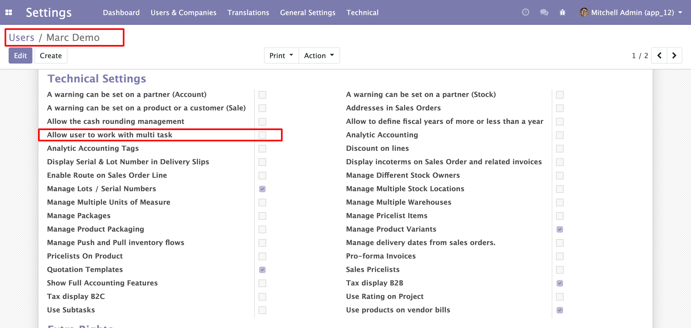
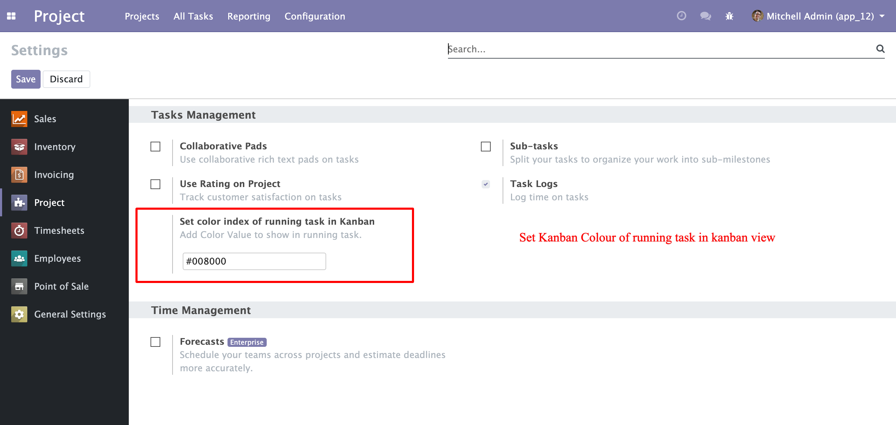
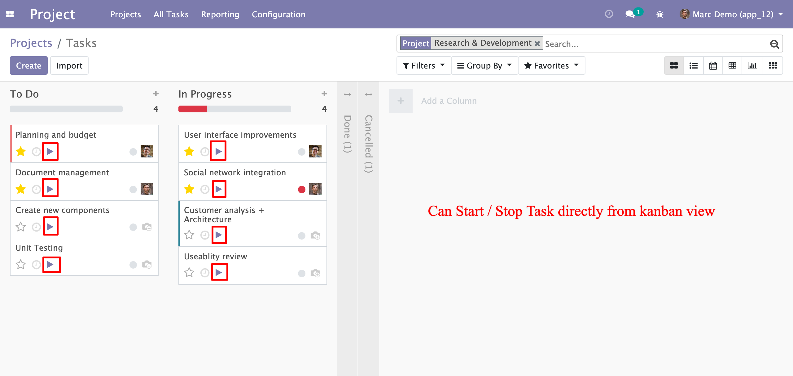
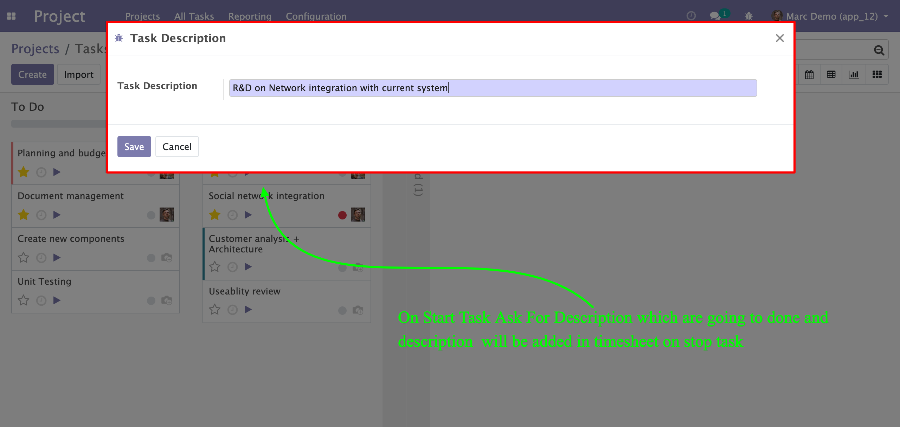
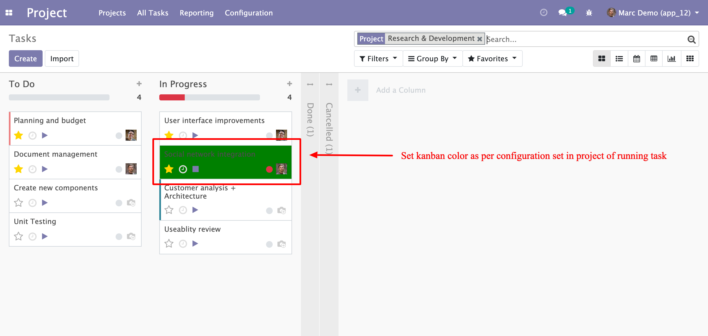
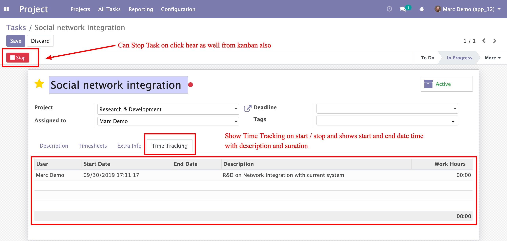
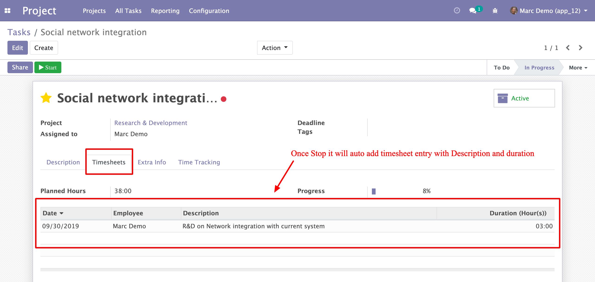
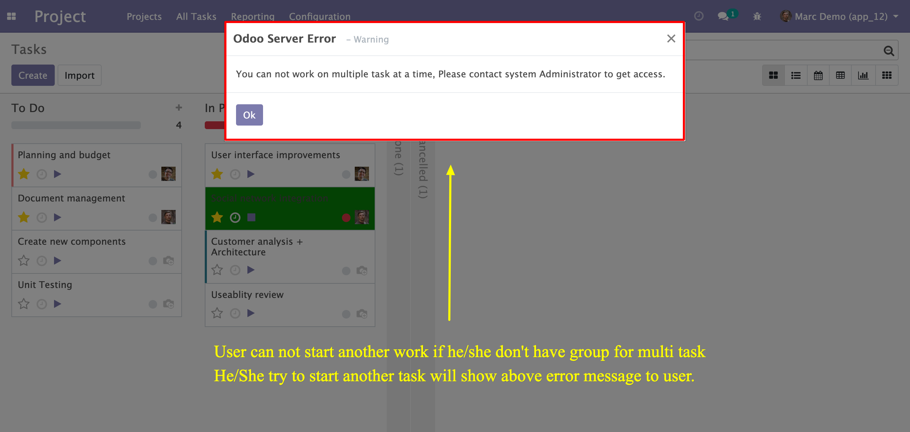
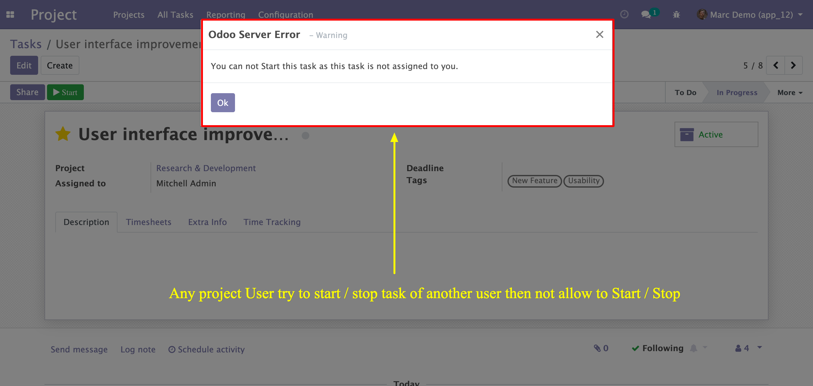

Available Key Features
- Allow project user to start/stop task from kanban and form view.
- New Group for Project user to allow user to start work on multi task at a time.
- Configuration to Show running task in task kanban view with background color.
- Once user going to start ask for description and added to time tracking once Stop Update to time sheet.
- Auto fill Time sheet of task with given description on Stop task.
- Project User not allow to start tasks which are assigned to others.
- Project User can not start task once another task is already in running if don't have multi task group.
1. Allow user to work with multi task Group

2. Set Running Task Color Index

3. Task Start/Stop
i). Task Start from Kanban/Form View

ii). Task Start Description View

iii). Running Task in kanban with color index

iv). Time Tracking History of Task

v). Time Stop & Time Tracking Update
3. Add Task Time sheet on stop task

4. Project User Restrictions
i). Task Start Warning if Don't have Multi task group and any other task is in running mode.

ii). Task Start Warning if user going to start task which is not assigned to him.
